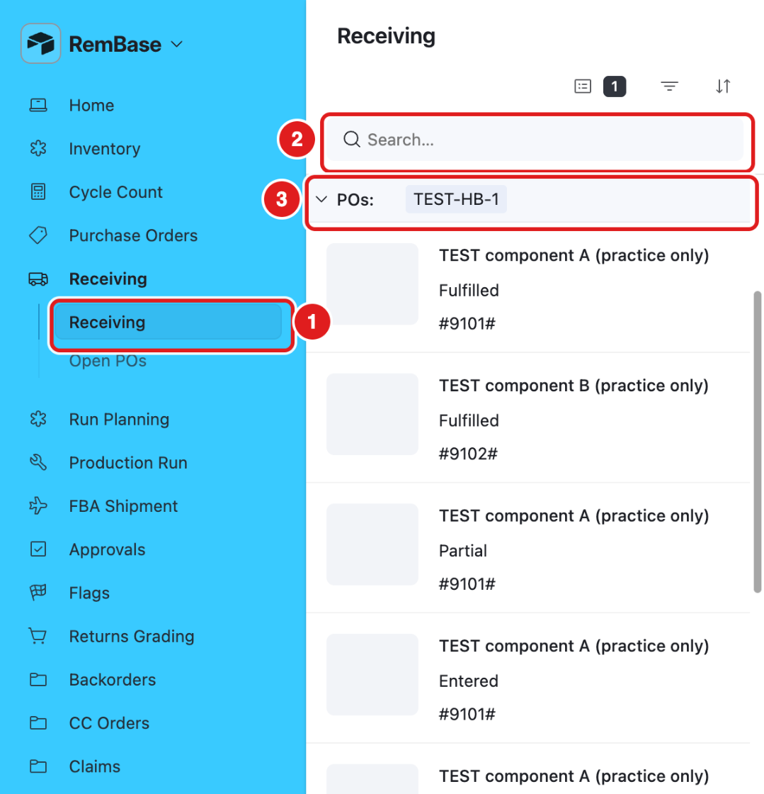
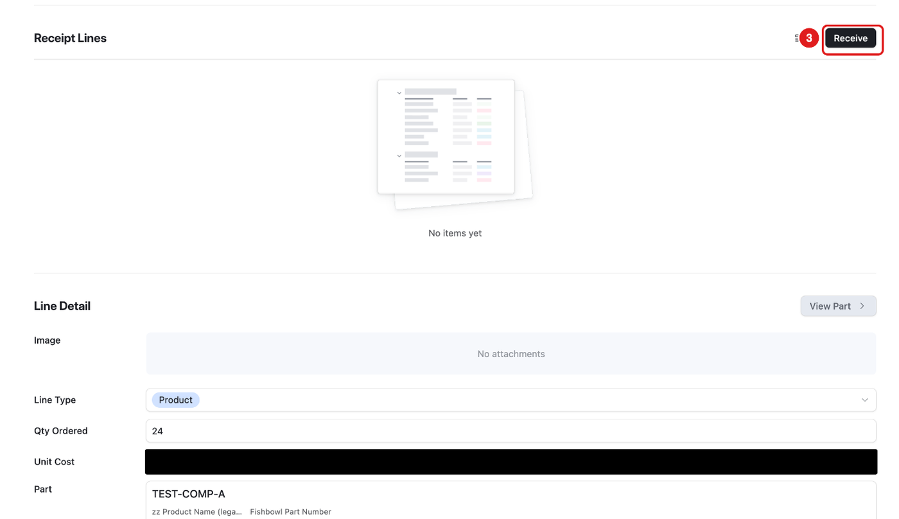
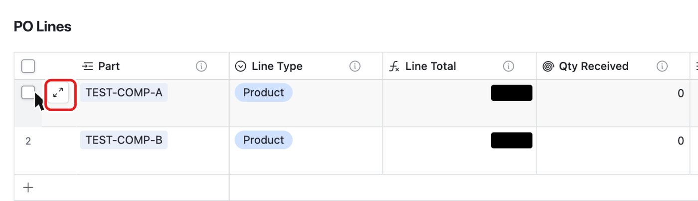
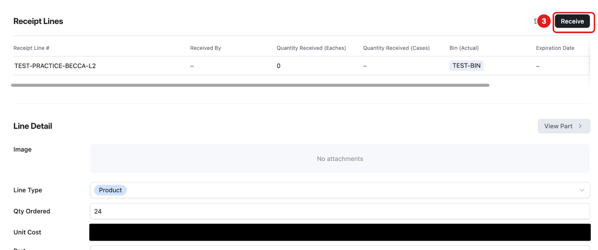
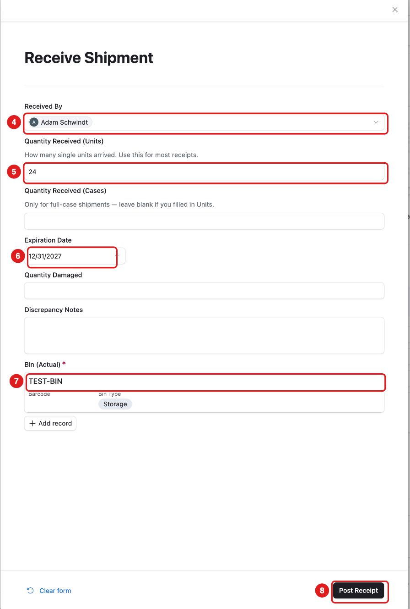
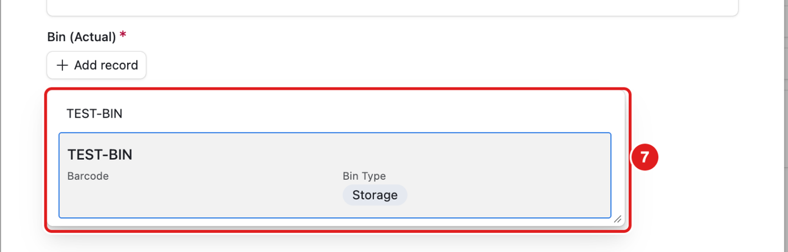
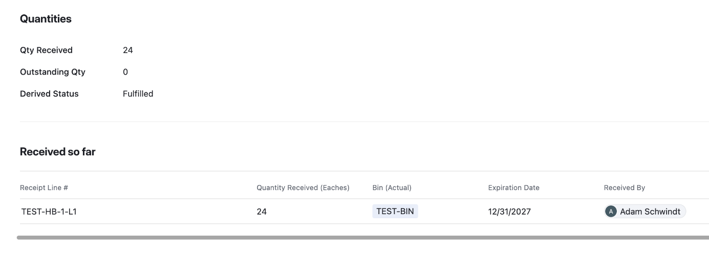
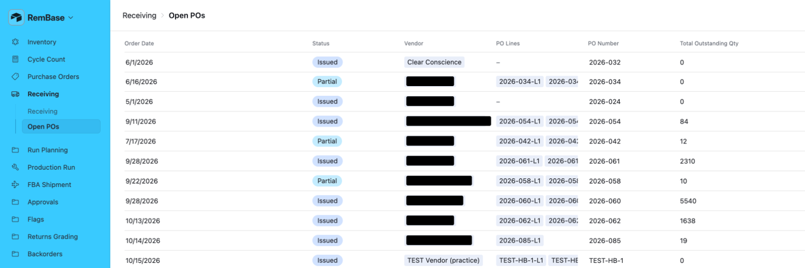
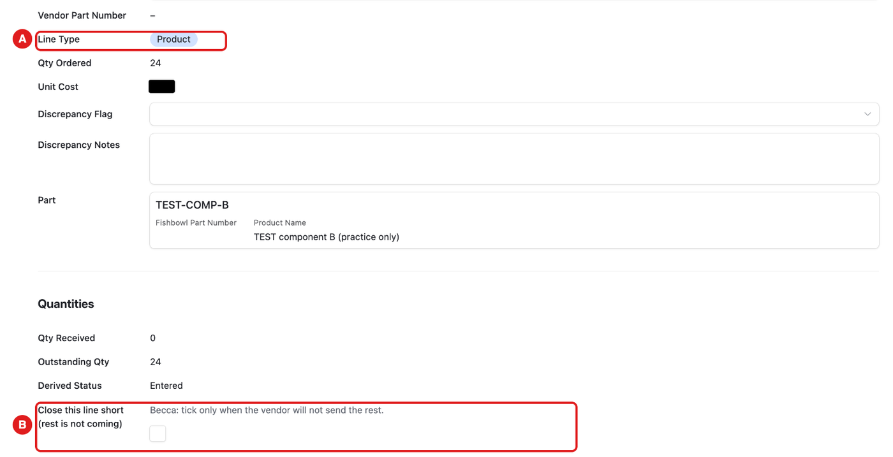

What this page is for
When boxes arrive from a vendor, you receive them. Receiving puts the stock in a bin with its expiration date.
Who uses it: Chad and Sabith receive. Becca fixes POs. Vicky checks costs.
Receive real deliveries in RemBase only: the floor with RemBase Scan, the office on the Receiving page. Never also in Fishbowl. If you receive in both, the stock is counted twice.
Receive a delivery with RemBase Scan
- Open RemBase Scan. Tap Receive a delivery.
- Scan the PO number on the packing slip, or tap the PO.
- Scan each item, or tap its line.
- Type how many (units or cases). Pick the expiry date if the item has one. Scan the bin label. Some are broken? Also type how many are damaged. Damaged units go to the DAMAGED bin by themselves. Vicky gets a task to ask the vendor for a credit.
- Tap Save receipt. It says Saved ✓ … RemBase is posting it. Then: Saved … RemBase copies it to Fishbowl.
- The same item with another date: after you save, tap Same item, another date.
- Take a photo of the packing slip: tap 📷 Add packing slip photo on the PO screen. One photo for each page. Wrong photo? Tap the small × on it and take it again.
- When the delivery is done: tap Done with this PO, or Done with this delivery (tell Becca). The photos are sent now, with the receipt. There is no Send button. The phone shows what is still due. Tap Yes, tell Becca.
The packing slip photo is optional. If it cannot be sent, the receipt is still saved. The phone shows Packing slip not saved. Tap Tap to retry. The photos stay on the phone until they are sent.
After you save: the stock is in RemBase right away. Once a day, Adam imports the day’s receipts into Fishbowl. Until then Fishbowl does not show it. Do not receive it in Fishbowl.
No Wi-Fi? The phone keeps your receipt and sends it when Wi-Fi is back. If it says Sent. RemBase has not confirmed it yet. Do NOT receive it again, do not receive it again. Check the PO in a minute.
An item that is not on the PO
- The phone says Not on this PO. Tap Report an extra (tells Becca).
- Type how many. Scan the bin: put it on the hold shelf. Tap Send to Becca. Nothing is received yet.
- Becca adds the line to the PO in Fishbowl. Within an hour it shows on the PO in RemBase Scan.
- Then receive it like any other line, from the hold shelf.
More than we ordered
- A little more than ordered: the phone asks. If your count is right, tap Yes, receive it anyway. RemBase makes a flag for Becca.
- Much more than ordered: the phone says Too many for this PO. Receive … now, then report the other ….
- Save the receipt for the number it allows.
- Tap Report … more than ordered (tells Becca). Put the rest on the hold shelf. Tap Send to Becca.
- Becca raises the quantity on the PO in Fishbowl. Within an hour it shows in RemBase Scan.
- Then receive the rest on the same line.
- The line is already received in full: the phone says already received in full (… of …). If more came, tap Report the extra (tells Becca). Do not receive it again.
Messages you may see
| Message | What to do |
|---|---|
| This PO line is not in Fishbowl. Tell Becca. | Tell Becca. Do not receive it yet. |
| Not saved. Receive it again. Adam sees why in Flags. | Receive it again. |
| Not saved: RemBase refused this receipt. Adam sees why in Flags. | Tell Adam. |
| Not saved: this line is already received in full. If more came, report the extra. | Tap Report the extra (tells Becca). |
| Sent. RemBase has not confirmed it yet. Do NOT receive it again | Do not receive it again. Check the PO in a minute. |
The Receiving page
The Receiving page in RemBase is for the office: to check a PO line, receive at a computer, fix a receipt, or close a line short. The floor receives with RemBase Scan.
Packing slips: open the PO. Under PO Notes the Packing Slips list shows the photos from the floor. To add one at a computer, click Add record. The Add packing slip form opens: add the photo or PDF (several pages are OK), write a Note if you want, and click Save packing slip.

- Click Receiving in the menu (1).
- Use Search (2) to find a PO number or a part.
The list is grouped by PO (3). Each row is one PO line, with the product name and its Derived Status. The list shows the lines that still have something to receive, and the lines received in the last 14 days. Click a row to see what was ordered and what has arrived.
A PO line number (like TEST-HB-1-L1) never changes once it is made.
On the line page:
- Outstanding Qty = how many are still to come.
- Receipt status warns you when a receipt on this line is not posted.
- Case math warns you when the part has no Units Per Case. Then receive in Units.
Cost from last paid. Check it. means the Unit Cost was filled in from the last price paid. Price/Qty changed by / at shows who last changed the price or quantity, and when. See Purchase Orders.
This list shows the open PO lines (real ones and TEST practice lines).
Always pick the bin. If a receipt has no bin, nothing is added to stock. Its Post Status says Not posted – needs bin. See Forgot the bin.
Task: receive several lines on the PO page (office)
You can receive many lines of one PO at once, at a computer. The floor still uses RemBase Scan.
- Click Purchase Orders in the menu. Click the PO.
- On each line that arrived, fill in Receive Now (units that arrived). Broken units: fill in Damaged Now.
- Pick the Receive Bin. A part with an expiration date: fill in Receive Exp.
- More than we ordered? Tick Confirm Over only if your count is right.
- Under the lines, in Desk receiving, tick Receive these lines once.
- Read Receive Result. It lists the lines that were sent. A line that was refused is listed with the reason. Its numbers stay in the boxes: fix them, then tick Receive these lines again.
The same checks as RemBase Scan apply. Damaged units go to the damaged bin. Receive each delivery once: here or in Scan, never both, and never in Fishbowl.
Task: receive a PO line
This is the office way, on a computer. The floor uses RemBase Scan. Receive each delivery once: in Scan or here, never both. To practice, use your own practice PO. There are three ways to open the Receive form. All three open the same form. Way 1 is the easiest.
Way 1 – from the Receiving page
Click Receiving in the menu. Click your line (for practice: your own practice PO).
Scroll down to Received so far. Click Receive (3).


Way 2 – from Purchase Orders
Click Purchase Orders in the menu. Click the PO number.
In PO Lines, point at the line. Click the small expand icon (⤢) at the left of the row. A plain click on the row only selects a box, it does not open the line.

Next to Receipt Lines, click Receive (3).



Way 3 – from Open POs
- Click Receiving → Open POs. Click the PO.
- Then do Way 2, step 2 and step 3: point at the line, click ⤢, then click Receive.
Then fill in the Receive Shipment form
Fill in the boxes:

- 4 – Received By: choose your name.
- 5 – Quantity Received (Units): how many single units arrived. Use this for most receipts.
- Quantity Received (Cases): only for full cases. Leave it empty if you typed Units.
- 6 – Expiration Date: the date on the box. Always fill it in if the box has a date.
- You can still fix the date on the receipt before it is posted.
- One receipt has one expiration date. If the boxes have two different dates, make two receipts: one for each date.
- Quantity Damaged: how many are broken. Leave it empty if none. Damaged units go to the DAMAGED bin by themselves. Vicky gets a task to ask the vendor for a credit.
- Discrepancy Notes: write what is wrong, if anything.
- 7 – Bin Scan or Bin (Actual): the bin where you put the stock. You must fill in one of them. For practice: TEST-BIN.
- Bin Scan: scan the bin label, or type the bin name. For practice: scan #9001# or type TEST-BIN.
- Bin (Actual): or choose the bin from the list.
To choose the bin from the list, click + Add record under Bin (Actual), type the bin name, and click the bin.

Check every box again.
Click Post Receipt (8).


What you should see
The receipt appears under Received so far (and under Receipt Lines on the PO line):

- Qty Received goes up.
- Outstanding Qty goes down.
- Derived Status says Partial or Fulfilled.
- Received so far lists each receipt with the bin, the expiration date, who received it, Received At (Eastern time) and Post Status.
Post Status on each receipt:
| Post Status | What it means |
|---|---|
| Posted | The stock is in the bin. |
| Not posted – needs bin | No bin yet. Add the bin. |
| Not posted – problem | Post problem on the receipt says what is wrong, for example “Bin ‘X’ not found. Scan the bin label again, or type the bin name”. |
| Cancelled (not posted) | Cancelled before it was posted. No stock changed. |
| Reversed | It was posted, then taken back out. |
| ⚠ Expiry changed after posting: reverse and receive again | Someone changed the date after posting. Reverse it and receive again. |
| Blocked (Fishbowl is stock master) | Real receipts were switched off at that time. Nothing posted. Tell Adam. |
| Historical | An old receipt copied from Fishbowl. |
Entry warning on a receipt is a warning only. The receipt is still accepted. For example: the expiration date is soon, or the part has no Units Per Case (receive in Units, or ask Becca to set Units Per Case).
The stock is now on the part page in Inventory.
Open POs
Receiving → Open POs lists POs that are not finished, with how much is still outstanding. Click a PO to open it, then receive a line as in Way 2.

Forgot the bin
Already saved a receipt with no bin, or with a wrong bin? Its Post Status says Not posted. Do not receive again.
- Open the receipt: Receiving → your PO line → Received so far → click the receipt.
- In the box Add the bin (receipt not posted yet), scan the bin label or type the bin name, and press Enter. For practice: #9001# or TEST-BIN.
- The receipt posts once.
Fix a wrong receipt
Anyone in the warehouse may press Reverse or cancel this receipt.
Use it before the day’s receipts are imported into Fishbowl (before 3 PM). After that, do not fix it in Fishbowl yourself. Tell Adam. He fixes both systems.
- A receipt that is not posted yet is cancelled. No stock changes.
- A receipt that is posted is reversed. The stock is taken back out.
- Open the receipt: Receiving → the PO line → Received so far → click the receipt.
- In Reverse Reason, type why. You must write a reason.
- Press Reverse or cancel this receipt and confirm.
- Read Reverse Result. OK means it worked.
- Receive the line again with the right numbers. A new receipt is made (…-R2).
Wrong expiration date? Before the receipt is posted, just fix the date on the receipt. After it is posted:
- You received it in RemBase Scan today, before 3 PM: press Reverse or cancel this receipt, then receive the line again with the right date.
- Any other time: do not fix it yourself. Tell Adam. He fixes it in Fishbowl.
If Reverse Result says:
| Message | What it means |
|---|---|
| REFUSED: type why in the Reverse Reason box first | Write a reason, then press the button again. |
| REFUSED … Ask a manager | The stock was already used or moved. Nothing changed. Tell Becca or Chad. |
| REFUSED … came from Fishbowl | Do not fix it in Fishbowl yourself. Tell Adam. |
| REFUSED: this receipt was already cancelled or already reversed | Nothing to do. |
Wrong amounts on a PO

Something arrived that is not on the PO (Not Ordered)
- The floor taps Report an extra (tells Becca). Becca adds the line in Fishbowl, with the price from the vendor. Within an hour it shows in RemBase. Then it is received as normal.
- In RemBase the line shows A – Line Type: Not Ordered.
- Never receive it on the line of another product.
More arrived than we ordered (Over)
- A little more: receive what arrived. RemBase makes a flag for Becca about the extra units.
- Much more: RemBase Scan receives what the PO allows and the floor reports the rest. Becca raises the quantity on the PO in Fishbowl. Then the floor receives the rest.
- If the extra units cost nothing, no approval is needed.
Less arrived than we ordered (Short)
- The rest is still coming: leave the line open.
- The rest is not coming: Chad checks with the vendor that the rest is not coming. Then Vicky opens the line on the Receiving page and ticks B – Close this line short (rest is not coming). Becca is the backup.
Common mistakes
- Typing cases in the Units box. Units = single items. Cases = full cases.
- No expiration date. Without a date the system cannot use the oldest stock first.
- Two expiration dates on one receipt. Make one receipt for each date.
- Wrong bin. Choose the bin where the stock really is.
- Receiving an item on the wrong line. If it is not on the PO, ask Becca to add a Not Ordered line first.
- No bin, or a bin that is not found. The receipt is not posted. Do not receive again. Add the bin. Then it posts once.
- Receiving twice. Never receive in Fishbowl too. Look at what was already received before you receive.
- Saving a receipt with no quantity. It is not posted. Cancel it (see Fix a wrong receipt), then receive again with the right quantity.
- A wrong receipt. Write a Reverse Reason, press Reverse or cancel this receipt, then receive again. See Fix a wrong receipt.